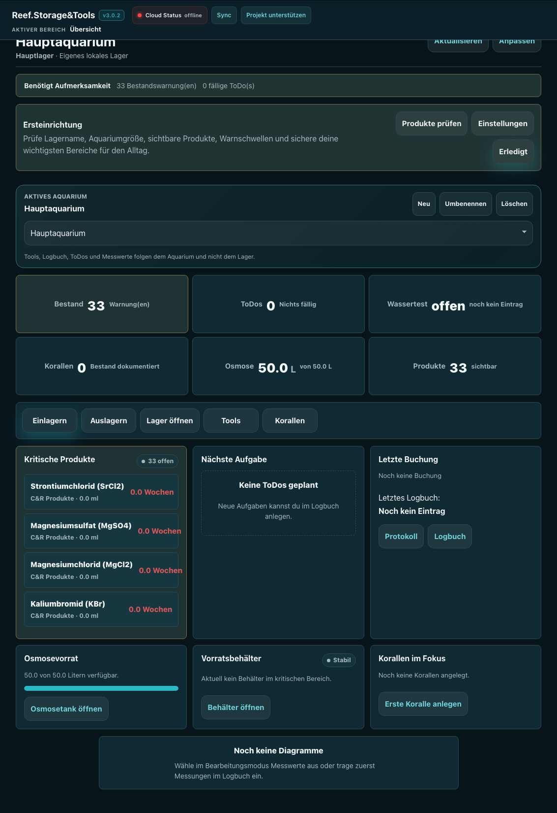
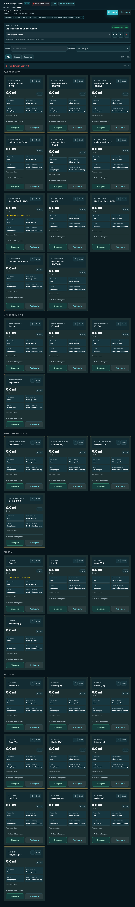
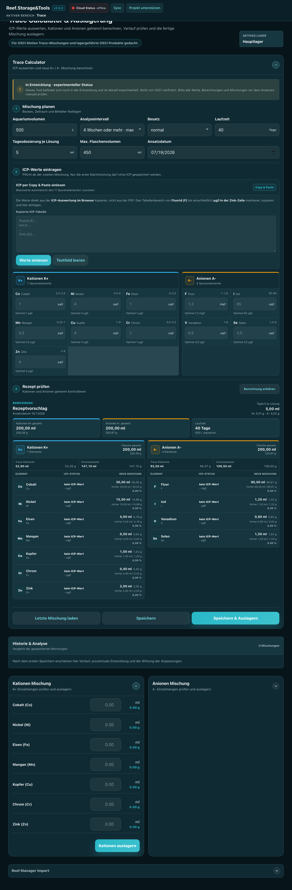
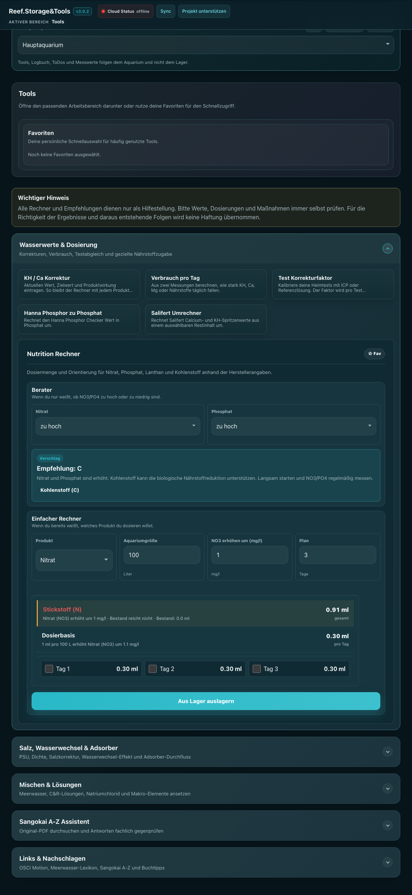
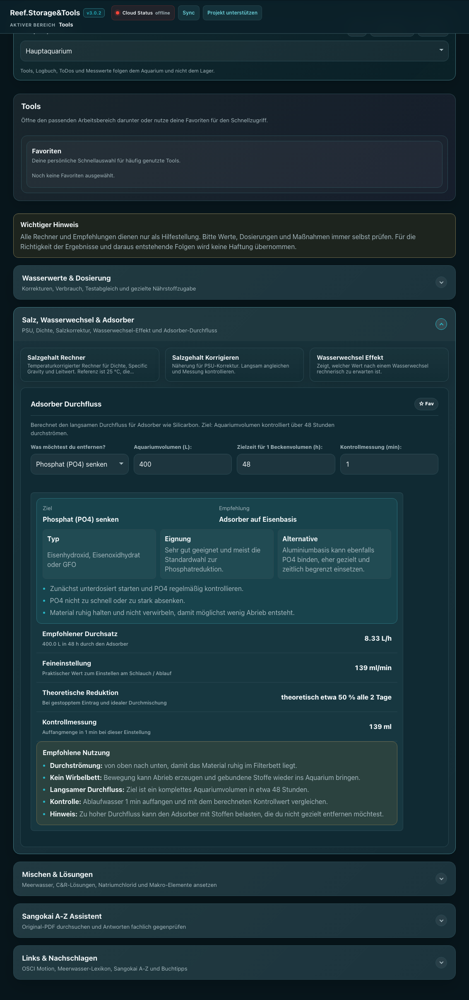
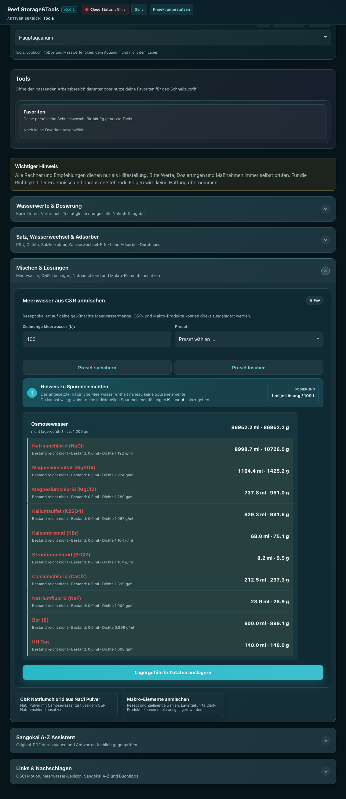
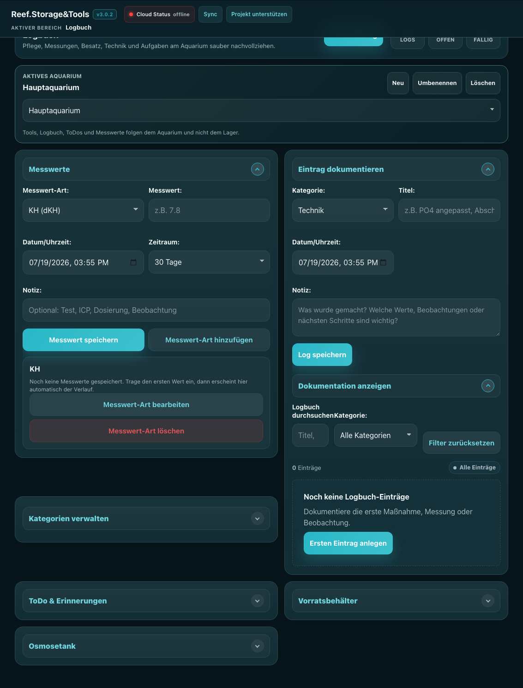
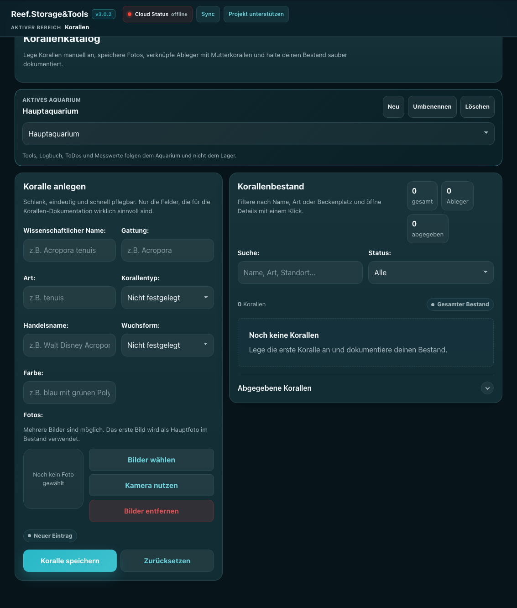
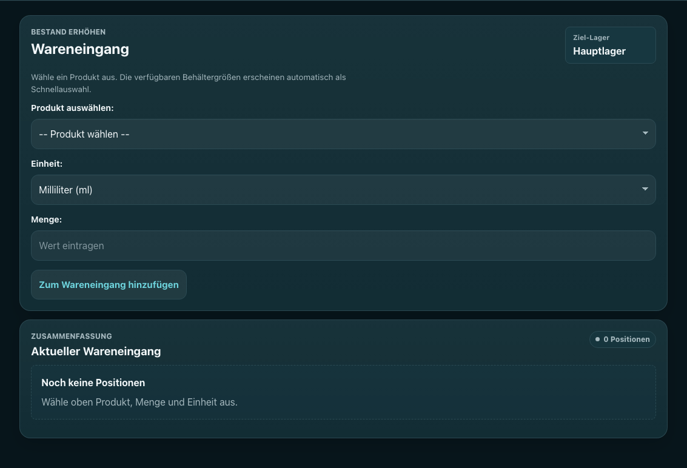
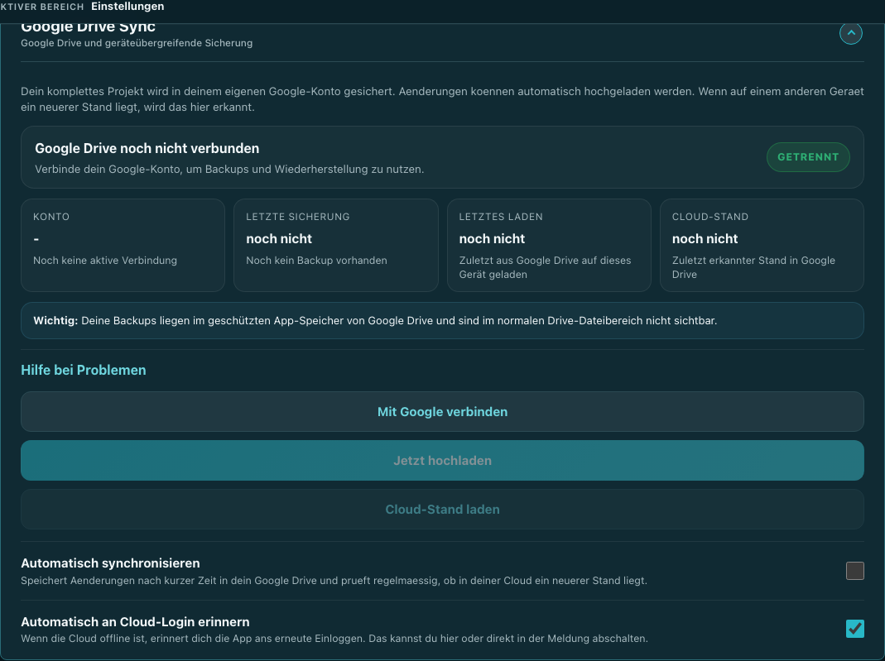

KH/Ca Korrektur, Verbrauch pro Tag, Nutrition Rechner, Testkorrekturen und Messwert-Umrechner.
Reeftools.de
Anleitung
Alle wichtigen Funktionen mit Bildern, kurzen Erklärungen und praxisnahen Abläufen für Lager, C&R, Trace, Tools, Logbuch und Pflege.
Rechner, Importfunktionen und Assistenten können Fehler enthalten. Prüfe Dosierungen, Wasserwerte, PDF-Importe und Handlungsempfehlungen immer fachlich, bevor du sie am Aquarium umsetzt.
Startseite
Übersicht
Die Übersicht ist dein schneller Blick auf den aktuellen Zustand. Kacheln zeigen Lagerwarnungen, Messwerte, Aufgaben, Füllstände und wichtige Hinweise. Viele Kacheln sind anklickbar und führen direkt in den passenden Bereich.
- Lager, C&R und Trace sind klar als Bereiche für das OSCI Versorgungssystem gedacht.
- Messwert-Grafiken zeigen Trends und Entwicklung deiner selbst eingetragenen Werte.
- Cloud Status zeigt, ob Google Drive Sync online, offline oder ungesynct ist.

OSCI Versorgungssystem
Lager
Im Lager verwaltest du deine Bestände. Produkte können eingelagert, ausgelagert, korrigiert, verborgen und für Nachbestellungen überwacht werden.
- Einlagern: Bestand hinzufügen, optional mit Behältergröße, Tara und Einheit.
- Auslagern: Menge buchen oder neuen Zielbestand eintragen. Danach kannst du entscheiden, ob nur korrigiert oder mit Protokoll ausgelagert wird.
- Live-Umrechnung: Bei ml und g wird anhand der Dichte direkt umgerechnet, wenn die Produktdaten vorhanden sind.
- Prognose: Eine Verbrauchsprognose entsteht erst sinnvoll ab mindestens zwei Entnahmen.
- TXT/PDF Export: Lagerstände können als Datei dokumentiert und später wieder importiert werden.

OSCI Versorgungssystem
C&R
Der C&R Bereich hilft beim Auslagern von Custom & Repair Produkten für Wasserwechsel und Korrekturen. Nach dem Import oder manuellen Eintragen siehst du benötigte Mengen und ob dein Lagerbestand reicht.
- Bevorzugte Einheit: Du kannst einstellen, ob ml oder g zuerst und groß angezeigt wird.
- Bestandsprüfung: Jede Position zeigt, wie viel nach der Auslagerung übrig bleibt.
- Ausgleichslisten: Standardmäßig eingeklappt, damit die Seite übersichtlich bleibt.
- PDF-Analyse: Aktuell wegen Wartung deaktiviert, da PDF-Erkennung fehleranfällig sein kann.
OSCI Versorgungssystem
Trace
Trace unterstützt Kationen- und Anionen-Mischungen, Reef Manager Importe, Historie und Auslagerung aus dem Lager.
- Reef Manager Import: Export aus der Reef Manager App einfügen, Aquariumvolumen manuell ergänzen und zur Historie hinzufügen.
- ICP Pflicht: Normale Mischungen und importierte Mischungen werden erst verarbeitet, wenn die passenden ICP-Werte hinterlegt sind.
- Startmischung: Nur die allererste Startmischung darf ohne ICP-Werte gespeichert werden und wird gesondert markiert.
- Historie & Analyse: Einträge können bearbeitet werden. Anionen, Kationen, Osmoseanteil und Gesamtvolumen sind getrennt sichtbar.
- Auslagern: Trace-Mengen können lagergeführt ausgelagert und protokolliert werden.

Rechner
01
Wasserwerte & Dosierung
02
Salz & Wasserwechsel
03
Mischen & Lösungen
04
Adsorber & Filter
05
Wissen & Quellen
KH / Ca Korrektur
Verbrauch pro Tag
Test Korrekturfaktor
Hanna P → PO4
Salifert Umrechner
Nutrition Rechner
Salzgehalt Rechner
Salzgehalt korrigieren
Wasserwechsel Effekt
Meerwasser aus C&R
C&R NaCl aus Pulver
Makro-Elemente
Adsorber Durchfluss
Sangokai A-Z Assistent
Links & Nachschlagen
Tools
Die Tools sind bewusst in Arbeitsbereiche sortiert. Öffne zuerst die passende Kategorie und danach nur das einzelne Tool, das du wirklich brauchst.
Salzgehalt, Dichte, Specific Gravity, PSU-Korrektur und rechnerischer Wasserwechsel-Effekt.
C&R Meerwasser, NaCl Lösung und Makro-Elemente auf deine gewünschte Zielmenge skalieren.
Durchfluss langsam planen und eine grobe Orientierung für Eisenbasis, Aluminiumbasis oder Aktivkohle erhalten.
Sangokai A-Z Assistent, OSCI Links, Meerwasser Lexikon und Buchtipps. Assistentenantworten immer prüfen.
Wasserwerte & Dosierung
Berechnet die Dosiermenge, um KH oder Calcium von Istwert auf Zielwert zu bringen.
Berechnet aus zwei Messungen, wie stark ein Wert täglich fällt oder steigt.
Gleicht Heimtests mit ICP oder Referenzlösung ab und speichert den Faktor.
Rechnet Phosphor ppb vom Hanna Checker in Phosphat mg/l um.
Wandelt Salifert Spritzen-Restwerte für Calcium oder KH in Messwerte um.
Berät zu NO3/PO4 und berechnet Dosierungen für N, P, La und Kohlenstoff.
Salz & Wasserwechsel
Rechnet Dichte, Specific Gravity, Leitwert und PSU mit Temperaturbezug um.
Gibt eine Orientierung, wie du eine Abweichung zur Ziel-PSU ausgleichst.
Zeigt den rechnerischen Nachher-Wert nach einem Wasserwechsel.
Mischen & Lösungen
Skaliert das C&R Meerwasser-Rezept auf beliebige Zielmengen.
Berechnet NaCl Pulver und Osmosewasser für flüssiges C&R Natriumchlorid.
Skaliert Rezepte für KH-Tag, KH-Nacht, Calcium und Magnesium.
Adsorber, Wissen & Quellen
Berechnet langsamen Durchfluss und gibt eine grobe Adsorber-Empfehlung.
Durchsucht die lokale Wissensbasis. Testversion, Antworten immer prüfen.
Sammelt Anleitung, OSCI Tools, Meerwasser Lexikon, Sangokai A-Z und Buchtipps.



Aquarium-Verlauf
Logbuch, Messwerte & ToDos
Das Logbuch ist an Aquarien gekoppelt, nicht an Lager. So kannst du mehrere Becken sauber dokumentieren.
- Logs: Einträge mit Datum, Kategorie und Notizen speichern, bearbeiten, löschen und nach Kategorie filtern.
- Messwerte: KH, Ca, Mg, PO4, NO3 und eigene Werte eintragen. Grafiken zeigen Verlauf, Trend, Prognose und Abweichung.
- ToDos: Wiederkehrende Aufgaben mit Intervall, letzter Ausführung und nächster Fälligkeit verwalten.
- Vorratsbehälter & Osmosetank: Füllstände, Verbrauch und Restlaufzeit überwachen.

Bestand
Korallen
Die Korallenverwaltung dient als Katalog für deinen Besatz. Du kannst Korallen manuell anlegen, Fotos hinzufügen und später suchen oder filtern.
- Pflichtdaten: Wissenschaftlicher Name, Gattung, Art, Handelsname, Korallentyp, Wuchsform und Farbe.
- Fotos: Hauptbild und weitere Bilder aus Kamera oder Fotobibliothek zuweisen.
- Ableger: Ableger können einer Mutterkoralle zugeordnet werden.
- Abgabe: Abgegebene Korallen können gelöscht oder in einer separaten Abgabeliste mit Kontakt hinterlegt werden.

Bestandspflege
Wareneingang, Nachbestellen, Statistik & Protokoll
Diese Bereiche helfen bei wiederkehrender Lagerarbeit und bei der Kontrolle deiner Bestände.
- Wareneingang: Mehrere Produkte gesammelt einlagern.
- Nachbestellen: Produkte mit niedrigem Bestand sammeln und Bestellbedarf besser planen.
- Statistik: Lagergebundene Auswertungen und Prognosen. Zugriff nur mit Schreibberechtigung.
- Protokoll: Lagergebundene Buchungshistorie. Nur Lesefreigabe erlaubt keine Änderungen.

Datensicherung
Google Drive Sync & Backup
Reeftools speichert lokal im Browser und kann zusätzlich verschlüsselte App-Daten in deinem eigenen Google Drive App-Speicher ablegen. Diese Dateien sind in Google Drive normalerweise nicht sichtbar, gehören aber zu deinem Konto.
- Cloud Status: Grün bedeutet online, rot offline, gelb ungesyncte Änderung.
- Upload: Aktuellen lokalen Stand in Google Drive sichern.
- Download: Gesicherten Stand aus Google Drive laden.
- Wiederherstellung: Je nach Sicherungsstand können ältere Datenstände zurückgeholt werden.
- Lokale Backups: JSON, TXT und PDF-Exporte bleiben wichtig, wenn du komplett unabhängig sichern möchtest.

Praxis
Empfohlene Arbeitsweise
- Lagerbestand regelmäßig pflegen und nach größeren Buchungen prüfen.
- Messwerte im Logbuch eintragen, damit Trends belastbarer werden.
- C&R, Trace und Nutrition Rechnungen vor der Anwendung gegen Messwerte und Herstellerangaben prüfen.
- Nach wichtigen Änderungen einen Google Drive Upload oder lokalen Backup-Export erstellen.
- Bei Unsicherheit langsam dosieren, messen und dokumentieren.